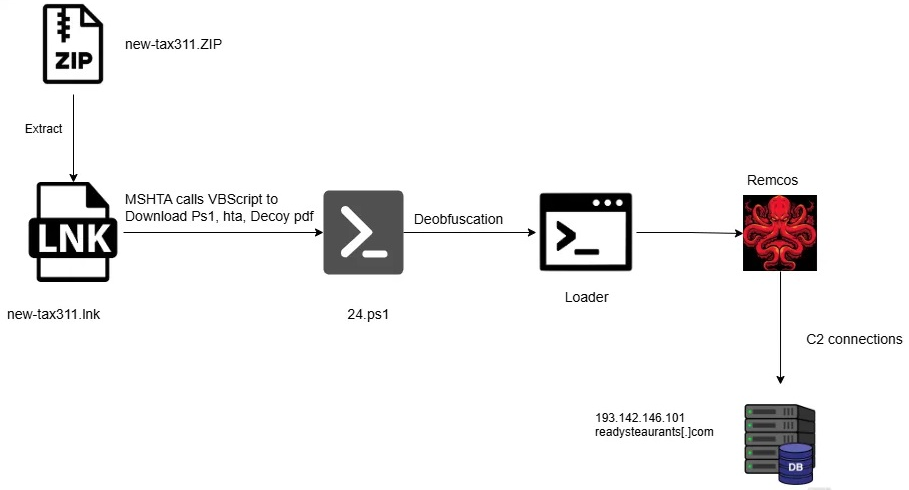
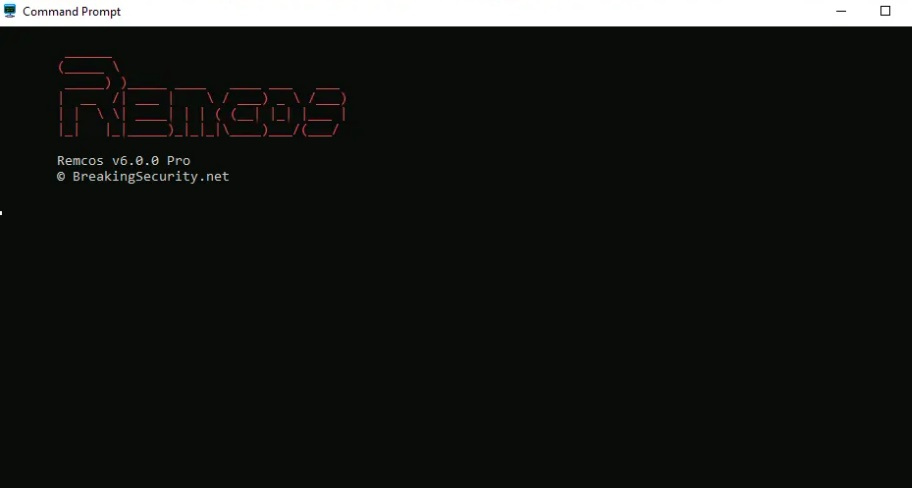

Remcos RAT
It is reported that a malware dubbed as Remcos RAT (Remote Control and Surveillance Trojan) which is a sophisticated Remote Access Trojan (RAT), is being escalated by the threat actors for espionage, credential theft, and system takeover. Remcos (Remote Control and Surveillance) is a Remote Access Trojan (RAT) created by Breaking Security and initially promoted as a legitimate tool for remote system management. However, it has since been extensively used by cybercriminals and Advanced Persistent Threat (APT) groups for malicious activities. In a recent campaign observed, cybercriminals used a stealthy, fileless method to deliver Remcos. Attackers use a specially crafted PowerShell loader that runs entirely in memory and performs further advanced activities. This technique helps the malware avoid being detected by antivirus software and allows attackers to remain hidden while maintaining access to the infected system.
Infection Mechanism:
In the current campaign observed, the malware is delivered through phishing emails containing .zip archives with deceptive .lnk shortcut files. When the shortcut is opened, it triggers the Windows utility mshta.exe, which executes a remote, obfuscated VBScript. This script downloads a PowerShell-based shellcode loader that runs entirely in memory. The loader bypasses disk-level detection and injects the Remcos RAT into legitimate system processes, allowing persistent remote control of the infected system. Registry is also modified under HKCU\Software\Microsoft\Windows\CurrentVersion\Run.

Remcos uses several modules that run in separate threads. To stay on the system, it saves its file path, license key, and timestamp in the same registry key.
It then starts a new thread to inject itself into the svchost.exe process using a technique called Process Hollowing, which helps it avoid detection. The malware also collects system information like the operating system version, file contents, and installed software.

Indicator of Compromise:
Hash:
- bf32ff64ac0cfee67f4b2df27733576a
- b63178f562b948b850f4676d4b8db1c0
- 55e5c8b8cba2ca2f152bf70dde2113f53f3dd42649c
ae535f55f0362b426e97c
Domain:
- readysteaurants[.]com
- hxxps://0x0[.]st/8KuV.ps1
IP:
- 193[.]142[.]146.101
- 162[.]254[.]39.129
- 107[.]173[.]4[.]16:2404
For more detailed list of IOC, kindly refer the below URLs:
- https://blog.qualys.com/vulnerabilities-threat-research/2025/05/15/fileless-execution-powershell-based-shellcode-loader-executes-remcos-rat
- https://www.sonicwall.com/blog/remcos-rat-targets-europe-new-amsi-and-etw-evasion-tactics-uncovered
- https://www.fortinet.com/blog/threat-research/new-campaign-uses-remcos-rat-to-exploit-victims
Best Practices and Recommendations:
- Do not download and install applications from untrusted sources [offered via unknown websites/ links on unscrupulous messages]. Install applications downloaded from reputed application market only. Users must be aware while clicking on links during web search
- Update software and operating systems with the latest patches. Outdated applications and operating systems are the targets of most attacks.
- Email administrators should block attachments that contain embedded macros, JavaScript files, password-protected ZIP/RAR/7z archives, and emails that include the password for these files within the same message.
- Don't open attachments in unsolicited e-mails, even if they come from people in your contact list, and never click on a URL contained in an unsolicited e-mail, even if the link seems benign. In cases of genuine URLs close out the e-mail and go to the organization’s website directly through browser.
- Install ad blockers to combat exploit kits such as Fallout that are distributed via malicious advertising.
- Prohibit external FTP connections and blacklist downloads of known offensive security tools.
- All operating systems and applications should be kept updated on a regular basis. Virtual patching can be considered for protecting legacy systems and networks. This measure hinders cybercriminals from gaining easy access to any system through vulnerabilities in outdated applications and software. Avoid applying updates / patches available in any unofficial channel.
- Restrict execution of Power shell /WSCRIPT in an enterprise environment. Ensure installation and use of the latest version of PowerShell, with enhanced logging enabled. Script block logging and transcription enabled. Send the associated logs to a centralized log repository for monitoring and analysis. https://www.fireeye.com/blog/threat-research/2016/02/greater_visibilityt.html
- Establish a Sender Policy Framework (SPF) for your domain, which is an email validation system designed to prevent spam by detecting email spoofing by which most of the ransomware samples successfully reaches the corporate email boxes.
- Application whitelisting/Strict implementation of Software Restriction Policies (SRP) to block binaries running from %APPDATA% and %TEMP% paths. Ransomware sample drops and executes generally from these locations.
- Users are advised to disable their RDP if not in use, if required, it should be placed behind the firewall and users are to bind with proper policies while using the RDP.
- Block the attachments of file types, exe|pif|tmp|url|vb|vbe|scr|reg|cer|pst|cmd|com|bat|dll|dat|hlp|hta|js|wsf
- Consider encrypting the confidential data as the ransomware generally targets common file types.
- Perform regular backups of all critical information to limit the impact of data or system loss and to help expedite the recovery process. Ideally, this data should be kept on a separate device, and backups should be stored offline.
- Network segmentation and segregation into security zones - help protect sensitive information and critical services. Separate administrative network from business processes with physical controls and Virtual Local Area Networks.
References:
- https://blog.qualys.com/vulnerabilities-threat-research/2025/05/15/fileless-execution-powershell-based-shellcode-loader-executes-remcos-rat
- https://www.sonicwall.com/blog/remcos-rat-targets-europe-new-amsi-and-etw-evasion-tactics-uncovered
- https://www.fortinet.com/blog/threat-research/new-campaign-uses-remcos-rat-to-exploit-victims
- https://breakingsecurity.net/remcos/